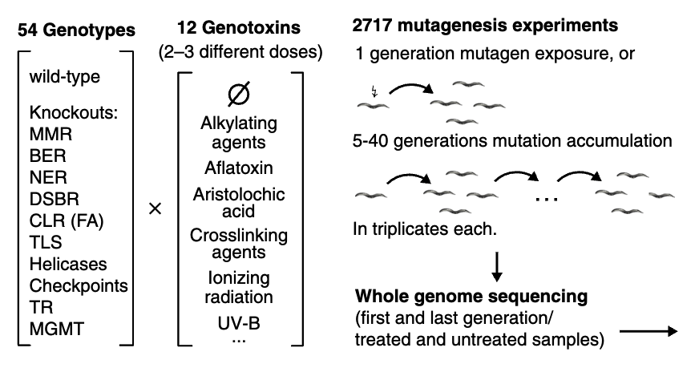

4. Use case III: Mutational signatures analysis for C.elegans#
4.1. Background#
In this example, we will re-analysis whole genome sequencing data from Volkova et,al..
In the original paper, 54 gentypes C.elegans were treated by 12 genotoxins with 2-3 different doses, generated 2717 total mutagenesis experiments and whole genome sequencing data.
{kind=link}
here, we select ten samples which:
xpc-1 gene knockout with UV treat.
xpc-1 gene predicted to enable damaged DNA binding activity and single-stranded DNA binding activity. Involved in response to UV. Predicted to be located in nucleus. Predicted to be part of XPC complex and nucleotide-excision repair factor 2 complex. Predicted to be active in cytoplasm. Is expressed in germline precursor cell; intestine; and nervous system. Used to study xeroderma pigmentosum. Human ortholog(s) of this gene implicated in pancreatic cancer; serous cystadenocarcinoma; xeroderma pigmentosum; and xeroderma pigmentosum group C. Orthologous to human XPC (XPC complex subunit, DNA damage recognition and repair factor).
mlh-1 gene knockout.
mlh-1 gene predicted to enable ATP hydrolysis activity. Predicted to be involved in mismatch repair. Predicted to be located in nucleus. Predicted to be part of MutLalpha complex. Human ortholog(s) of this gene implicated in several diseases, including Lynch syndrome (multiple); carcinoma (multiple); and cervix uteri carcinoma in situ. Is an ortholog of human MLH1 (mutL homolog 1). Curator: Ranjana Kishore; Valerio Arnaboldi
mrt-2 gene knockout.
mrt-2 gene predicted to enable damaged DNA binding activity. Involved in DNA metabolic process and intracellular signal transduction. Predicted to be located in nucleus. Predicted to be part of checkpoint clamp complex. Orthologous to human RAD1 (RAD1 checkpoint DNA exonuclease).
Sample |
Genotype |
Generation |
Replicate |
Mutagen |
CD0009b |
mrt-2 |
0 |
0 |
|
CD0009f |
mrt-2 |
20 |
3 |
|
CD0001b |
N2 |
0 |
0 |
|
CD0134a |
mlh-1 |
20 |
2 |
|
CD0134c |
mlh-1 |
20 |
3 |
|
CD0134d |
mlh-1 |
20 |
4 |
|
CD0392a |
xpc-1 |
0 |
0 |
|
CD0842b |
xpc-1 |
1 |
1 |
UV |
CD0842c |
xpc-1 |
1 |
2 |
UV |
CD0842d |
xpc-1 |
1 |
3 |
UV |
4.2. Download data#
4.3. Download and confing C.elegans genome file#
4.4. write Snakemake file#
For this project, we need change the sample sheet info.
Tip
import pandas as pd
samples_info = pd.read_csv('',index_col='Sample_name') # set sample sheet path
unpaired_samples = samples_info.loc[pd.isna(samples_info['Normal_R1_file_path'])].index.tolist()
paired_samples = samples_info.loc[~pd.isna(samples_info['Normal_R1_file_path'])].index.tolist()
configfile: "" # set config file path
project = samples_info["Project"].unique().tolist()[0]
genome_version = 'WBcel235' # set genome version
import os
if not os.path.exists("logs/slurm"):
os.makedirs("logs/slurm")
pre_pon_db = False
if not os.path.exists('analysis/pindel_normal/log'):
os.makedirs('analysis/pindel_normal/log')
groups = ['NC','T']
germ_caller_list = ['caveman']
caller_list = ['strelkasomaticmanta','caveman','muse','cgppindel_filter']
recall_pon = False
recall_pon_pindel = False
recal = False
rule all:
input:
## paired sample
expand([
"{project}/{genome_version}/results/dedup/paired/{sample}-{group}.sorted.bam",
"{project}/{genome_version}/results/sv/paired/DELLY/{sample}/SV_delly_{sample}_filter.vcf",
"{project}/{genome_version}/results/vcf/paired/{sample}/strelkasomaticmanta.vcf",
"{project}/{genome_version}/results/vcf/paired/{sample}/muse.vcf",
'{project}/{genome_version}/logs/paired/caveman_{sample}.log',
],
project = project,
genome_version = genome_version,
sample = paired_samples,
group = groups,
caller = caller_list)
include: "workflow/WGS/Snakefile" # the relative path of clindet workflow WGS subfolder snakefile
4.5. Run clindet#
nohup snakemake --profile workflow/config_slurm \
-j 30 --printshellcmds -s snake_wgs_worm.smk \
--use-singularity \
--singularity-args "--bind /public/home/:/public/home/,/public/ClinicalExam:/public/ClinicalExam" \
--latency-wait 300 --use-conda --conda-frontend conda -k > worm.out &
4.6. Results#
4.6.1. 突变检测#
4.6.2. #
在本例中我们选取了两种加